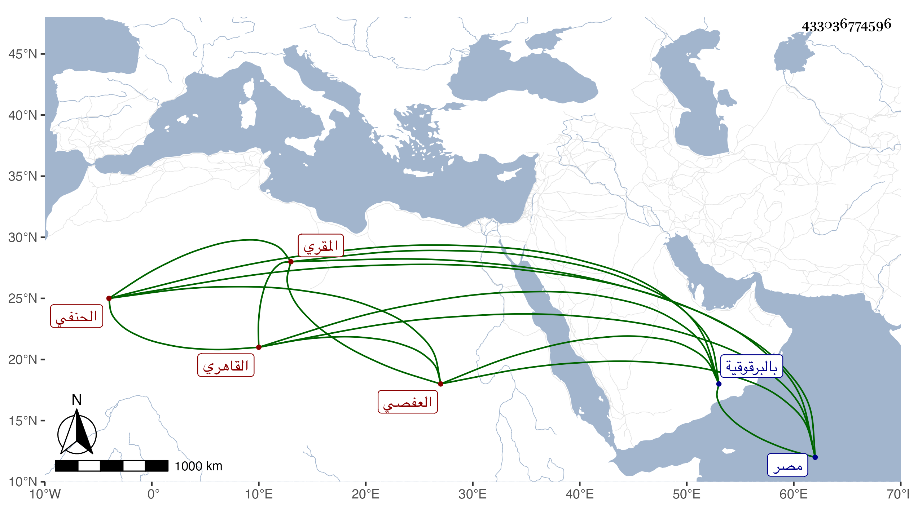

0902Sakhawi.DawLamic.ITO20230111-ara1.EIS1600.433036774596
Biography ID: 433036774596
895
محمد بن إبراهيم بن عبيد الله بن مخلوف بن رشيد الشمس أبو عبد الله العفصي القاهري الحنفي المقري ممن أخذ القراءات عن الفخر الضرير والمشبب والزراتيتي واستقر بعده في مشيخة القراء بالبرقوقية وتميز فيها وتصدى للإقراء فأخذ عنه خلق كابن أسد ورغب له عن البرقوقية وقال أنه يروى أيضا عن البغدادي والتنوحي وأم بالزمامية وشهد عليه الأكابر كالزينين طاهر ورضوان وإمام الجامع وعظموه ووصفه الأخير بشيخنا وأثبت شيخنا اسمه في القراء بالديار المصرية وسط هذا القرن ومات قبل الخمسين رحمه الله .
